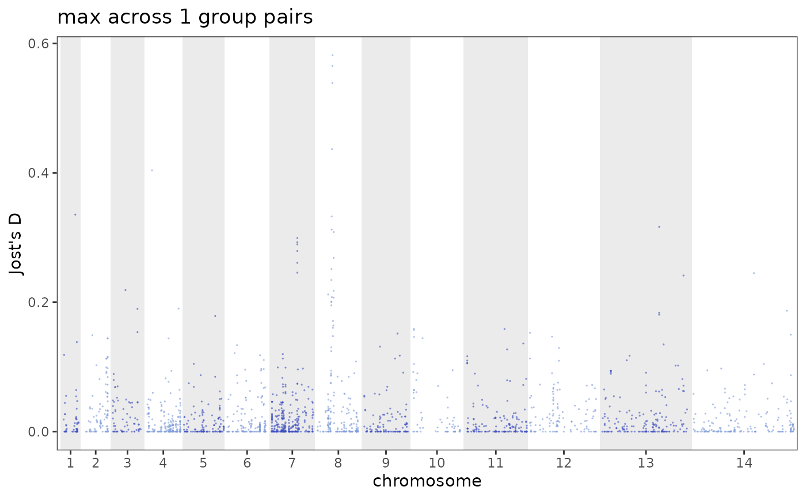

The per-SNP differentiation statistic along the genome, styled like the IBD Manhattan
plots. By default it collapses the pairwise comparisons to one value per SNP
(combine = "max", the strongest differentiation at that SNP in any pair); pass
pair to plot a single group pair instead.
Usage
plot_diff_manhattan(
pd,
pair = NULL,
combine = c("max", "mean"),
reference = DEFAULT_REFERENCE,
chroms = NULL,
skip_chr = NULL,
point_size = 0.6,
point_alpha = 0.6,
colours = NULL,
colors = NULL
)Arguments
- pd
A
pop_diff()/jost_d()result withchr:posSNP ids.- pair
Optional single group pair to plot:
c("A", "B")or"A vs B". Default combines all pairs per SNP.- combine
How to collapse pairs per SNP when
pairisNULL:"max"(default) or"mean".- reference
Reference id for the chromosome layout (default
DEFAULT_REFERENCE).- chroms, skip_chr
Optional chromosomes to keep / drop (the rest re-laid-out).
- point_size, point_alpha
Point aesthetics.
- colours, colors
Optional length-2 colour vector for the alternating chromosome bands.
Examples
ps <- example_pop_structure("africa", umap = FALSE)
plot_diff_manhattan(pop_diff(ps, group = "region"))
